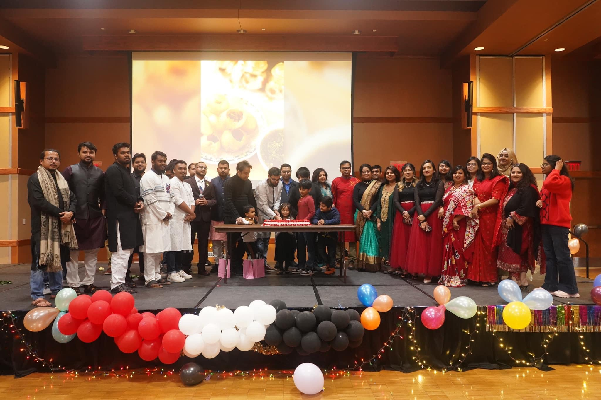
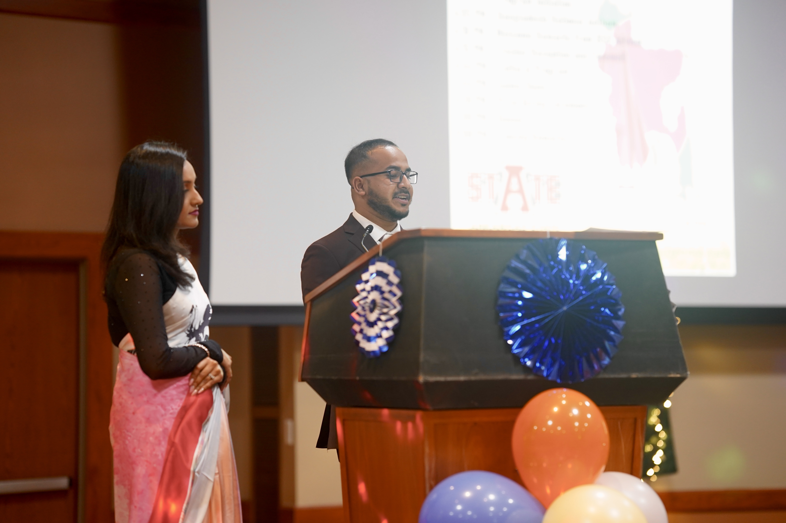
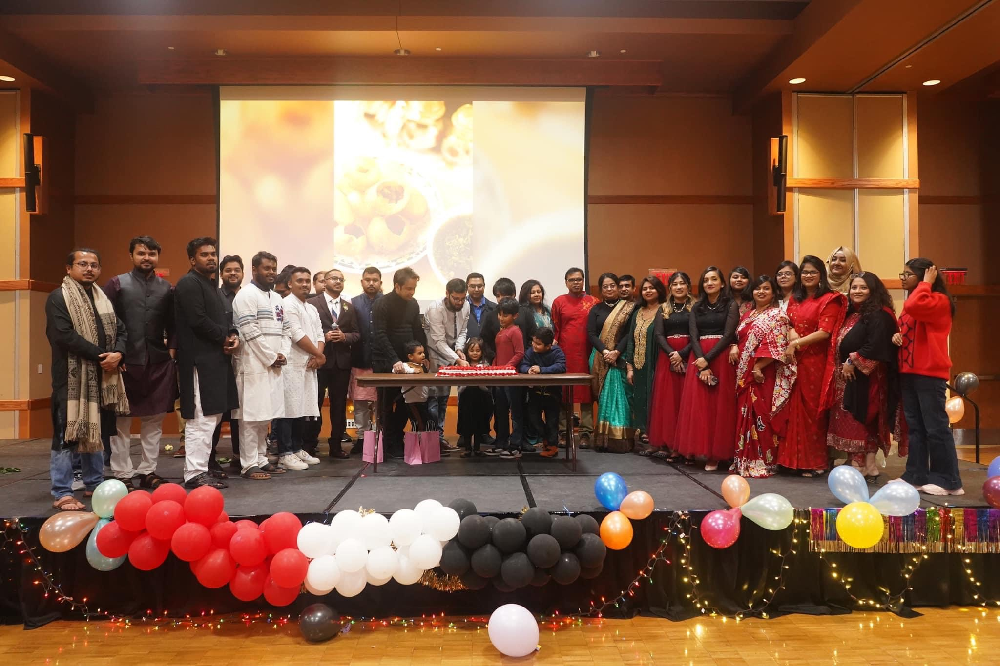
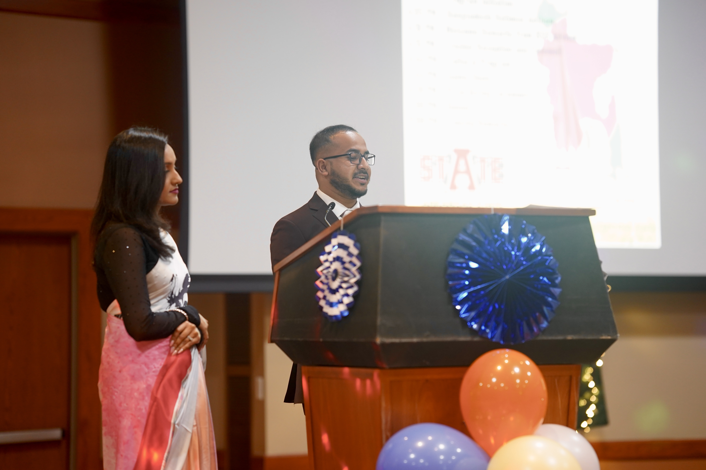

Portfolio
Projects & experience
Explore my academic projects, internship work, certifications, leadership, and resume.
Academic Projects
Data & Business Analyst Intern
Certifications
Leadership
Resume
Download the latest PDF
About Me
Hello! I’m Md Nahid Rahman, a student of Information Systems & Business Analytics at Arkansas State University. I’m passionate about data analysis, visualization, and business strategy. I enjoy exploring new technologies, learning from challenges, and turning data into meaningful insights.
Academic Projects
-
Data Analytics Project – Big Data Health Analytics on Global Cancer and U.S. Clinical Diagnostics
Global Cancer (Kaggle), U.S. Health (CDC) — regression, clustering, multivariate visuals in Tableau & SAS Viya.
View project -
Research Analyst Project – U.S. Air Quality & Pollution Analysis (EPA Data, 2020–2024)
Cleaned and transformed 10M+ air quality records using Google BigQuery with SQL for trend and pattern analysis, applied predictive modeling in R to forecast AQI (R² = 0.89), and built interactive Tableau and Power BI dashboards to visualize AQI exceedance and pollution patterns.
Data & Business Analyst Intern
-
Americas Best Value Inn — Internship Highlights
I analyzed over 40 months of hotel booking data using SQL to identify seasonal trends and business patterns. Using Python and Pandas, I cleaned and transformed the dataset before applying regression models to forecast room nights and average daily rates (ADR), achieving an R² of 0.999. These insights supported operational improvements, increasing bookings and reducing cancellation rates. I also built interactive Tableau dashboards showcasing ADR fluctuations and booking trends for management decisions.
See artifacts
Certifications
-

Google Data Analytics Professional Certificate — Coursera, 2024
View Certificate -

Business Analytics Simternship™ Certificate — Stukent, 2024
View Certificate - Microsoft PL-300 (Power BI Data Analyst) — Planned
- Tableau Desktop Specialist — Planned
- SQL (HackerRank / DataCamp) — Planned
Leadership
International Student Association | Secretary
 



Resume
You can view my latest resume here:
View Resume